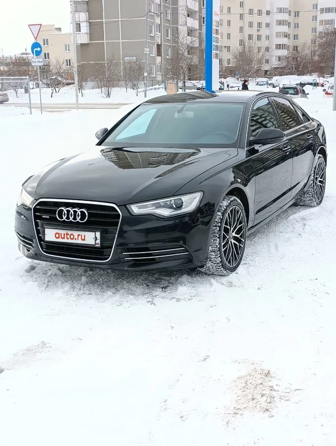

Volkswagen Golf VI (2008–2012) — это шестое поколение эталонного немецкого хэтчбека C-класса, представляющее собой глубокую модернизацию predecessor с упором на комфорт и премиальность. Автомобиль выпускался в 3- и 5-дверных кузовах, ценится за высокую безопасность (5 звезд Euro NCAP) и медленную потерю стоимости на рынке.
Главное преимущество: Образцовая эргономика, высокое качество отделки салона, отличная шумоизоляция и точная управляемость.
Лучший выбор на вторичном рынке: Связка простого атмосферного двигателя 1.6 BSE (102 л.с.) и механической КПП — это самый долговечный и неприхотливый вариант с ресурсом более 300 000 км.
Основные риски: Модификации с турбомоторами (1.2 и 1.4 TSI) и 7-ступенчатым роботом DSG (DQ200) первых лет выпуска требуют тщательной диагностики из-за капризного мехатроника и растяжения цепи ГРМ.
Volkswagen Passat (B7)
Volkswagen Passat B7 (седьмое поколение) — это автомобиль D-класса, представляющий собой глубокую модернизацию модели B6 и выпускавшийся с 2010 по 2015 год. Машина построена на платформе PQ46 и предлагалась в кузовах седан, универсал (Variant), а также во внедорожной модификации Alltrack.
Характеристики:
Длина: 4769 мм
Ширина: 1820 мм
Высота: 1474 мм
Колесная база: 2712 мм
Клиренс (дорожный просвет): 135 мм (для РФ поставлялся адаптационный пакет с увеличенным клиренсом до 155–165 мм).
Объем багажника: 565 литров у седана и до 1731 литра у универсала при сложенных сиденьях.
Бензиновые моторы:
1.4 TSI (122 и 150 л.с.) — экономичный двигатель начального уровня, на поздних ревизиях избавившийся от основных детских болезней с цепью ГРМ.
1.8 TSI (152 л.с.) — самый популярный агрегат на вторичном рынке, обеспечивающий отличную динамику, но требующий контроля за расходом масла (масложор) на ранних версиях.
2.0 TSI (210 л.с.) и флагманский 3.6 FSI VR6 (300 л.с.) — для любителей спортивной динамики и полного привода.
Дизельные моторы:
2.0 TDI (140, 170 и 177 л.с.)
Плюсы (Преимущества):
Просторный салон и огромный багажник.
Высокое качество материалов и эргономика.
Отличная курсовая устойчивость на трассе.
Надежность дизельных моторов 2.0 TDI.
Минусы (Недостатки):
Риски износа сцепления и мехатроника на DSG-7.
Склонность к повышенному расходу масла у моторов 1.8/2.0 TSI до рестайлинга.
Низкий штатный клиренс для европейских версий.
Дорогая стоимость обслуживания сложных комплектаций.
Audi A6 (C7)

Audi A6 (C7) (четвертое поколение) — это автомобиль E-класса (бизнес-класс), пришедший на смену поколению C6 и выпускавшийся с 2011 по 2018 год. Машина построена на модульной платформе MLB и предлагалась в кузовах седан, универсал (Avant), а также во вседорожной модификации Alltrack (Quattro). В 2014 году модель претерпела глубокий рестайлинг.
Характеристики:
Длина: 4915 мм
Ширина: 1874 мм
Высота: 1455 мм
Колесная база: 2912 мм
Клиренс (дорожный просвет): 165 мм (европейская подвеска — 145 мм, адаптивная пневмоподвеска меняет просвет от 120 до 175 мм).
Объем багажника: 530 литров у седана и до 1680 литров у универсала при сложенных сиденьях.
Бензиновые моторы:
1.8 TFSI (190 л.с.) и 2.0 TFSI (180 и 252 л.с.) — рядные «четверки». Младший мотор появился после рестайлинга. 2.0-литровый на дорестайлинге страдал «масложором», на Gen3 проблему решили.
2.8 FSI (204 л.с.) — атмосферный V6, ставился до 2014 года. Плавен в работе, но склонен к задирам при перегреве.
3.0 TFSI (300, 310 и 333 л.с.) — компрессорный V6 для высокой динамики. Рестайлинговые версии стали надежнее.